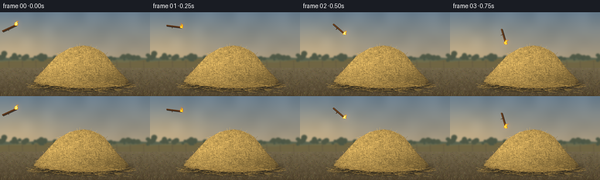
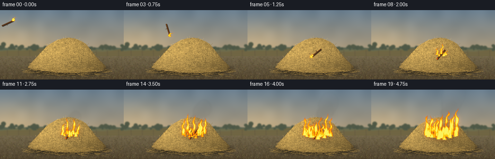
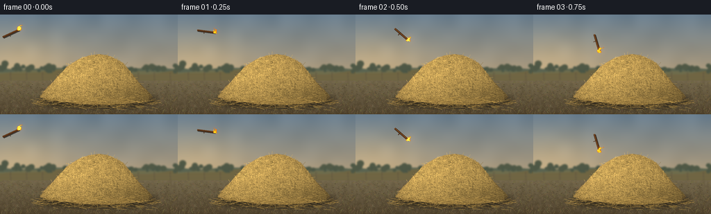
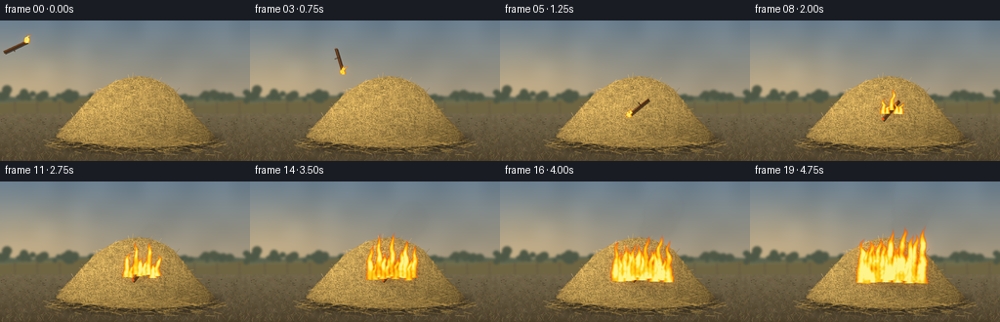

CODING AGENTS AS PIXEL WORLD MODELS
traex/GPT-6.1-Sol · phygen_143
点击播放 · 原生 RGB 像素
逐轮保存的候选
回放视频、检查图与代码变化。
每份候选均可单独播放。实际图片检查记录在下方工具轨迹中。
候选 01播放与检查图
点击播放 · 原生 RGB 像素


展开代码变化
--- 上一保存版本
+++ 本次保存版本
@@ -0,0 +1,233 @@
+from pathlib import Path
+import json, math
+import numpy as np
+from PIL import Image, ImageDraw, ImageFilter
+import artifact_io
+
+ROOT = Path(__file__).resolve().parent
+SPEC = json.loads((ROOT / 'task_spec.json').read_text())
+W,H = SPEC['width'],SPEC['height']
+S=3
+WW,HH=W*S,H*S
+rng=np.random.default_rng(143)
+
+def pts(p): return [(int(x*S), int(y*S)) for x,y in p]
+def line(d,p,c,width=.4): d.line(pts(p),fill=c,width=max(1,round(width*S)))
+def ellipse(d,b,c): d.ellipse(tuple(int(v*S) for v in b),fill=c)
+
+def smoothnoise(shape, coarse, seed):
+ r=np.random.default_rng(seed)
+ small=Image.fromarray((r.random((coarse[1],coarse[0]))*255).astype('uint8'))
+ return np.asarray(small.resize((shape[1],shape[0]),Image.Resampling.BICUBIC)).astype(float)/255
+
+# Warm, shallow-focus pasture with a low horizon and an earthen foreground.
+y,x=np.mgrid[0:HH,0:WW]/S
+sky=np.zeros((HH,WW,3),float)
+for k,(a,b) in enumerate([(104,178),(125,158),(142,125)]): sky[:,:,k]=a+(b-a)*np.minimum(y/88,1)
+cloud=smoothnoise((HH,WW),(14,7),21)
+for k in range(3): sky[:,:,k]+=9*(cloud-.5)
+# Quiet haze toward the low sun outside the frame.
+sun=np.exp(-((x-23)/75)**2-((y-61)/36)**2)
+sky+=sun[:,:,None]*np.array([30,20,5])
+bg=Image.fromarray(np.uint8(np.clip(sky,0,255)))
+d=ImageDraw.Draw(bg)
+for j in range(3):
+ horizon=[]
+ for xx in np.linspace(-5,261,95):
+ yy=76+j*4 + 3*math.sin(xx*.033+j)+1.3*math.sin(xx*.075+2*j)
+ horizon.append((xx,yy))
+ d.polygon(pts(horizon+[(260,144),(-5,144)]),fill=[(89,99,80),(110,108,76),(111,101,66)][j])
+# Remote tree line, deliberately soft, smaller than the subject.
+for _ in range(85):
+ xx=rng.uniform(-10,266); yy=80+rng.normal(0,1.8); rr=rng.uniform(1.5,5)
+ ellipse(d,(xx-rr,yy-rr*1.5,xx+rr,yy+rr*.3),(71+int(rr*2),84+int(rr),69))
+# Fence along the far edge of the field.
+for xx in range(-8,266,23):
+ line(d,[(xx,83),(xx+.4,99)],(94,82,63),1)
+line(d,[(-5,89),(260,87)],(116,102,78),.5)
+line(d,[(-5,94),(260,91.5)],(116,102,78),.4)
+bg=bg.filter(ImageFilter.GaussianBlur(1.15*S))
+# Textured dry dirt, interspersed with sparse stubble.
+arr=np.asarray(bg).astype(float)
+ground=y>95
+noise=smoothnoise((HH,WW),(90,45),9)*.5 + smoothnoise((HH,WW),(WW,HH),20)*.5
+for k,(a,b) in enumerate([(113,79),(101,66),(74,45)]):
+ col=a+(b-a)*np.clip((y-95)/49,0,1)+20*(noise-.5)
+ arr[:,:,k]=np.where(ground,col,arr[:,:,k])
+bg=Image.fromarray(np.uint8(np.clip(arr,0,255)))
+d=ImageDraw.Draw(bg)
+for _ in range(1400):
+ xx=rng.uniform(0,256); yy=rng.uniform(96,144); z=(yy-92)/52
+ ll=rng.uniform(1,5)*z
+ c=tuple(int(v+rng.uniform(-13,13)) for v in (120,105,67))
+ line(d,[(xx,yy),(xx+rng.uniform(-3,3),yy-ll)],c,.25+.18*z)
+for _ in range(550):
+ xx=rng.uniform(0,256); yy=rng.uniform(100,144)
+ ellipse(d,(xx,yy,xx+rng.uniform(.3,1.7),yy+rng.uniform(.15,.55)),(79,69,47))
+# Broad, very soft contact shadow.
+shadow=Image.new('RGBA',(WW,HH));ds=ImageDraw.Draw(shadow)
+ellipse(ds,(54,113,227,135),(20,16,9,135))
+shadow=shadow.filter(ImageFilter.GaussianBlur(3*S))
+bg=Image.alpha_composite(bg.convert('RGBA'),shadow)
+# Loose hay silhouette, broad at the foot and softly mounded at the top.
+shape=[(57,119),(63,111),(70,103),(76,98),(82,90),(89,84),(95,76),(104,70),(114,64),(128,59),(143,57),(155,59),(167,64),(177,70),(185,79),(191,87),(199,97),(211,109),(220,119),(214,124),(196,127),(173,129),(148,130),(119,129),(94,126),(73,124)]
+mask=Image.new('L',(WW,HH));dm=ImageDraw.Draw(mask);dm.polygon(pts(shape),fill=255)
+mask=mask.filter(ImageFilter.GaussianBlur(.35*S))
+n1=smoothnoise((HH,WW),(65,37),43)
+n2=smoothnoise((HH,WW),(180,100),47)
+light=(1-.45*np.clip((x-110)/140,0,1)-.30*np.clip((y-83)/48,0,1))
+base=np.stack([168*light+24*n1+13*n2,132*light+20*n1+10*n2,65*light+18*n1+6*n2],axis=-1)
+hay=Image.fromarray(np.uint8(np.clip(base,0,255))).convert('RGBA');hay.putalpha(mask)
+bg=Image.alpha_composite(bg,hay)
+d=ImageDraw.Draw(bg)
+maskarr=np.asarray(mask)
+# Dense irregular straw strands and broken stems, with individual shaded faces.
+for _ in range(14700):
+ xx=rng.uniform(55,223); yy=rng.uniform(56,131)
+ if maskarr[min(HH-1,int(yy*S)), min(WW-1,int(xx*S))]<160: continue
+ length=rng.uniform(2,15)*(rng.random()*.7+.45)
+ # Mostly diagonal interwoven hay, with a few upright and curved stalks.
+ angle=rng.choice([-.6,.55,1.3,-1.3,0.1])+rng.normal(0,.32)
+ dx=math.cos(angle)*length/2;dy=math.sin(angle)*length/2
+ a=(xx-dx,yy-dy); b=(xx+dx,yy+dy)
+ if not(0<a[0]<256 and 0<a[1]<144 and 0<b[0]<256 and 0<b[1]<144):continue
+ # Most strands stay within the mound; a minority stand proud at its loose edge.
+ if maskarr[int(a[1]*S),int(a[0]*S)]<120 or maskarr[int(b[1]*S),int(b[0]*S)]<120:
+ if rng.random()>.12:continue
+ shade=(1-.33*max(0,(xx-112)/120)-.23*max(0,(yy-92)/40))
+ variation=rng.uniform(.7,1.28)
+ c=tuple(int(np.clip(v*shade*variation,0,255)) for v in (211,172,92))
+ mid=(xx+rng.normal(0,.55),yy+rng.normal(0,.8))
+ line(d,[a,mid,b],c,rng.uniform(.22,.47))
+ if rng.random()<.14:
+ node=(xx+.22*dx,yy+.22*dy)
+ line(d,[(node[0]-.6,node[1]-.25),(node[0]+.6,node[1]+.25)],tuple(int(v*.65) for v in c),.24)
+# Straw debris around the base provides scale and loose edges.
+for _ in range(650):
+ xx=rng.uniform(49,232); yy=rng.uniform(121,138)
+ if rng.random()>np.exp(-((xx-144)/88)**2-(yy-125)**2/70):continue
+ length=rng.uniform(3,17); ang=rng.uniform(-.4,.4)
+ col=rng.choice([(151,119,58),(180,145,77),(122,95,47),(196,157,78)])
+ line(d,[(xx-length/2,yy),(xx+length/2,yy+math.sin(ang)*length)],tuple(col),.32)
+static=np.asarray(bg.convert('RGB')).astype(float)
+
+# Temporally coherent turbulence: translation through one fixed noise volume,
+# not unrelated noise frames, so flames and smoke flow upwards.
+noise_large=smoothnoise((HH*3,WW),(40,56),100)
+noise_fine=smoothnoise((HH*3,WW),(145,210),102)
+
+def fire_field(t,emitters):
+ shift=int(t*47*S)% (HH*2)
+ noise=noise_large[shift:shift+HH,:]
+ fine=noise_fine[(shift*2)%(HH*2):(shift*2)%(HH*2)+HH,:]
+ turb=(noise-.5)*1.0+(fine-.5)*.32
+ density=np.zeros((HH,WW))
+ for ex,ey,height,width,phase,strength in emitters:
+ hh=height*(.91+.16*math.sin(t*8+phase)+.07*math.sin(t*17+phase))
+ q=(ey-y)/hh
+ sway=(np.sin(q*8-t*7+phase)*1.45 + np.sin(q*17-t*10+phase)*.65)*np.clip(q,0,1)+q*q*2.3
+ cent=ex+sway+2.4*(noise-.5)*np.clip(q,0,1)
+ wid=width*(np.maximum(0,1-q)**.68)+.12
+ r=np.abs(x-cent)/(wid+1e-5)
+ f=np.clip(1-r**1.6+ .7*turb,0,1)*np.clip((1-q)*3,0,1)
+ f*=((q>=-.055)&(q<=1))
+ density=np.maximum(density,f*strength)
+ return density
+
+def draw_stick(t):
+ # Released offscreen; gravitational parabola drops it into the near face.
+ landing=1.25
+ if t<landing:
+ u=t/landing
+ cx=16+126*u; cy=27-34*u+96*u*u
+ ang=-.45+2.9*u
+ else:
+ v=min((t-landing)/.22,1)
+ cx=142+2*v;cy=89+3*v;ang=2.45-.18*v
+ ux,uy=math.cos(ang),math.sin(ang)
+ a=(cx-13*ux,cy-13*uy);b=(cx+13*ux,cy+13*uy)
+ overlay=Image.new('RGBA',(WW,HH));dd=ImageDraw.Draw(overlay)
+ line(dd,[(a[0]+.8,a[1]+1),(b[0]+.8,b[1]+1)],(20,13,7,170),3)
+ line(dd,[a,b],(75,44,22,255),2.5)
+ line(dd,[(a[0]-.4,a[1]-.5),(b[0]-.4,b[1]-.5)],(150,92,40,255),.65)
+ # Bark knots and a short broken twig.
+ m=(cx-3*ux,cy-3*uy)
+ line(dd,[m,(m[0]-uy*4,m[1]+ux*4)],(75,46,25,255),1.1)
+ hot=(b[0]-ux*1.8,b[1]-uy*1.8)
+ line(dd,[hot,b],(245,84,14,255),2.6)
+ return overlay, b
+
+frames=[]
+for i in range(SPEC['frames']):
+ t=i/SPEC['fps']
+ elapsed=max(0,t-1.35)
+ progress=min(1,elapsed/3.15)
+ img=Image.fromarray(np.uint8(static)).convert('RGBA')
+ # Modest darkening and charring stays close to the ignition point.
+ if elapsed>0:
+ char=np.exp(-((x-146)/(8+27*progress))**2-((y-91)/(5+12*progress))**2)
+ pixels=np.asarray(img).copy()
+ amount=char*(.1+.40*progress)*(maskarr/255)
+ pixels[:,:,:3]=(pixels[:,:,:3].astype(float)*(1-amount[:,:,None])).astype('uint8')
+ img=Image.fromarray(pixels)
+ # Smoke is translucent, buoyant, and is displaced gently toward screen right.
+ smoke=Image.new('RGBA',(WW,HH))
+ if elapsed>.15:
+ sd=ImageDraw.Draw(smoke)
+ # Puffs born at a steady rate. Age controls ascent, expansion and dilution.
+ for birth in np.arange(1.6,t+.001,.12):
+ age=t-birth
+ rad=3+age*6.2
+ xx=147+age*8+2.2*math.sin(birth*9)+2*math.sin(age*3+birth)
+ yy=85-age*23
+ opacity=int((16+27*min((birth-1.3)/3,1))*min(age/.25,1)*max(0,1-age/3.8))
+ color=(93+int(14*age),91+int(14*age),84+int(16*age),opacity)
+ ellipse(sd,(xx-rad,yy-rad*1.35,xx+rad,yy+rad),color)
+ ellipse(sd,(xx-rad*.7-5,yy-rad,xx+rad*.6-5,yy+rad*.3),color)
+ smoke=smoke.filter(ImageFilter.GaussianBlur(2*S))
+ img=Image.alpha_composite(img,smoke)
+ stick,tip=draw_stick(t)
+ img=Image.alpha_composite(img,stick)
+ emitters=[]
+ # The small burning end remains visible during the entire throw.
+ if t<1.5:
+ emitters.extend([(tip[0],tip[1]+1,9,2.8,0,1),(tip[0]-1.8,tip[1],6.7,1.8,2,1)])
+ if elapsed>0:
+ # Ignition begins on the struck straw, then spreads along its dry surface.
+ n=3+int(progress*13)
+ for k in range(n):
+ f=k/max(n-1,1)
+ ex=145+(f-.5)*(7+55*progress)
+ ey=91+8*progress+4*abs(f-.5)+2*math.sin(k*2.3)
+ height=(10+44*progress)*(0.63+.37*math.sin(k*1.94+1)**2)
+ emitters.append((ex,ey,height,2.5+3.8*progress,k*2.17,1))
+ dens=fire_field(t,emitters)
+ # Soft firelight illuminates surrounding straw; restrained bloom outside the flame.
+ glow=np.asarray(Image.fromarray(np.uint8(dens*175)).filter(ImageFilter.GaussianBlur(5*S))).astype(float)/255
+ a=np.asarray(img).astype(float)
+ a[:,:,:3]+=glow[:,:,None]*np.array([115,44,3])
+ # A hot, opaque golden core bordered by translucent orange/red flame sheets.
+ alpha=np.clip(dens*2.6,0,1)*.97
+ r=np.full((HH,WW),255.)
+ g=np.interp(dens,[0,.13,.35,.62,.9,1],[51,71,126,196,235,247])
+ b=np.interp(dens,[0,.2,.48,.75,1],[4,2,5,28,139])
+ flames=np.stack([r,g,b],axis=-1)
+ a[:,:,:3]=a[:,:,:3]*(1-alpha[:,:,None])+flames*alpha[:,:,None]
+ img=Image.fromarray(np.uint8(np.clip(a,0,255))).convert('RGBA')
+ # Occasional short-lived embers follow upward arcs rather than spraying downward.
+ spark=Image.new('RGBA',(WW,HH));sp=ImageDraw.Draw(spark)
+ if elapsed>.5:
+ for k in range(16):
+ period=.7+(k%4)*.18
+ age=(t+k*.163)%period
+ life=age/period
+ if life>.88 or (k%3==0 and progress<.5):continue
+ sx=142+math.sin(k*4.1)*progress*25+age*(5+math.sin(k)*6)
+ sy=88-age*(22+k%5*5)
+ al=int(200*(1-life))
+ line(sp,[(sx,sy),(sx-.25,sy+.7)],(255,167,47,al),.5)
+ img=Image.alpha_composite(img,spark).convert('RGB')
+ img=img.resize((W,H),Image.Resampling.LANCZOS)
+ frames.append(np.asarray(img,dtype=np.uint8))
+artifact_io.save(np.stack(frames),ROOT)
+print('Saved',len(frames),'RGB frames')
候选 02播放与检查图
点击播放 · 原生 RGB 像素


展开代码变化
--- 上一保存版本
+++ 本次保存版本
@@ -125,11 +125,11 @@
for ex,ey,height,width,phase,strength in emitters:
hh=height*(.91+.16*math.sin(t*8+phase)+.07*math.sin(t*17+phase))
q=(ey-y)/hh
- sway=(np.sin(q*8-t*7+phase)*1.45 + np.sin(q*17-t*10+phase)*.65)*np.clip(q,0,1)+q*q*2.3
- cent=ex+sway+2.4*(noise-.5)*np.clip(q,0,1)
+ sway=(np.sin(q*8-t*7+phase)*2.2 + np.sin(q*17-t*10+phase)*1.05)*np.clip(q,0,1)+q*q*2.3
+ cent=ex+sway+4.8*(noise-.5)*np.clip(q,0,1)
wid=width*(np.maximum(0,1-q)**.68)+.12
r=np.abs(x-cent)/(wid+1e-5)
- f=np.clip(1-r**1.6+ .7*turb,0,1)*np.clip((1-q)*3,0,1)
+ f=np.clip(1-r**1.6+ 1.1*turb,0,1)*np.clip((1-q)*3,0,1)
f*=((q>=-.055)&(q<=1))
density=np.maximum(density,f*strength)
return density
@@ -180,8 +180,8 @@
rad=3+age*6.2
xx=147+age*8+2.2*math.sin(birth*9)+2*math.sin(age*3+birth)
yy=85-age*23
- opacity=int((16+27*min((birth-1.3)/3,1))*min(age/.25,1)*max(0,1-age/3.8))
- color=(93+int(14*age),91+int(14*age),84+int(16*age),opacity)
+ opacity=int((25+44*min((birth-1.3)/3,1))*min(age/.25,1)*max(0,1-age/3.8))
+ color=(79+int(18*age),78+int(18*age),73+int(20*age),opacity)
ellipse(sd,(xx-rad,yy-rad*1.35,xx+rad,yy+rad),color)
ellipse(sd,(xx-rad*.7-5,yy-rad,xx+rad*.6-5,yy+rad*.3),color)
smoke=smoke.filter(ImageFilter.GaussianBlur(2*S))
@@ -198,9 +198,9 @@
for k in range(n):
f=k/max(n-1,1)
ex=145+(f-.5)*(7+55*progress)
- ey=91+8*progress+4*abs(f-.5)+2*math.sin(k*2.3)
- height=(10+44*progress)*(0.63+.37*math.sin(k*1.94+1)**2)
- emitters.append((ex,ey,height,2.5+3.8*progress,k*2.17,1))
+ ey=92+8*progress-14*progress*abs(f-.5)+3.6*math.sin(k*2.3)
+ height=(10+44*progress)*(0.45+.55*math.sin(k*1.94+1)**2)
+ emitters.append((ex,ey,height,2.5+2.4*progress,k*2.17,1))
dens=fire_field(t,emitters)
# Soft firelight illuminates surrounding straw; restrained bloom outside the flame.
glow=np.asarray(Image.fromarray(np.uint8(dens*175)).filter(ImageFilter.GaussianBlur(5*S))).astype(float)/255
@@ -210,7 +210,7 @@
alpha=np.clip(dens*2.6,0,1)*.97
r=np.full((HH,WW),255.)
g=np.interp(dens,[0,.13,.35,.62,.9,1],[51,71,126,196,235,247])
- b=np.interp(dens,[0,.2,.48,.75,1],[4,2,5,28,139])
+ b=np.interp(dens,[0,.2,.48,.75,1],[4,2,5,22,95])
flames=np.stack([r,g,b],axis=-1)
a[:,:,:3]=a[:,:,:3]*(1-alpha[:,:,None])+flames*alpha[:,:,None]
img=Image.fromarray(np.uint8(np.clip(a,0,255))).convert('RGBA')
可观测工具轨迹
实际执行的命令与返回图片。
命令 1exit 0
/bin/bash -lc 'ls -la; cat prompt.txt; cat GENERATION_RULES.md; cat task_spec.json'
命令 2exit 0
/bin/bash -lc "cat artifact_io.py; python - <<'PY' import importlib.util for m in ['numpy','PIL','scipy','imageio']: print(m, bool(importlib.util.find_spec(m))) PY"
命令 3exit 0
/bin/bash -lc "cat > generate.py <<'PY'
from pathlib import Path
import json, math
import numpy as np
from PIL import Image, ImageDraw, ImageFilter
import artifact_io
ROOT = Path(__file__).resolve().parent
SPEC = json.loads((ROOT / 'task_spec.json').read_text())
W,H = SPEC['width'],SPEC['height']
S=3
WW,HH=W*S,H*S
rng=np.random.default_rng(143)
def pts(p): return [(int(x*S), int(y*S)) for x,y in p]
def line(d,p,c,width=.4): d.line(pts(p),fill=c,width=max(1,round(width*S)))
def ellipse(d,b,c): d.ellipse(tuple(int(v*S) for v in b),fill=c)
def smoothnoise(shape, coarse, seed):
r=np.random.default_rng(seed)
small=Image.fromarray((r.random((coarse[1],coarse[0]))*255).astype('uint8'))
return np.asarray(small.resize((shape[1],shape[0]),Image.Resampling.BICUBIC)).astype(float)/255
# Warm, shallow-focus pasture with a low horizon and an earthen foreground.
y,x=np.mgrid[0:HH,0:WW]/S
sky=np.zeros((HH,WW,3),float)
for k,(a,b) in enumerate([(104,178),(125,158),(142,125)]): sky[:,:,k]=a+(b-a)*np.minimum(y/88,1)
cloud=smoothnoise((HH,WW),(14,7),21)
for k in range(3): sky[:,:,k]+=9*(cloud-.5)
# Quiet haze toward the low sun outside the frame.
sun=np.exp(-((x-23)/75)**2-((y-61)/36)**2)
sky+=sun[:,:,None]*np.array([30,20,5])
bg=Image.fromarray(np.uint8(np.clip(sky,0,255)))
d=ImageDraw.Draw(bg)
for j in range(3):
horizon=[]
for xx in np.linspace(-5,261,95):
yy=76+j*4 + 3*math.sin(xx*.033+j)+1.3*math.sin(xx*.075+2*j)
horizon.append((xx,yy))
d.polygon(pts(horizon+[(260,144),(-5,144)]),fill=[(89,99,80),(110,108,76),(111,101,66)][j])
# Remote tree line, deliberately soft, smaller than the subject.
for _ in range(85):
xx=rng.uniform(-10,266); yy=80+rng.normal(0,1.8); rr=rng.uniform(1.5,5)
ellipse(d,(xx-rr,yy-rr*1.5,xx+rr,yy+rr*.3),(71+int(rr*2),84+int(rr),69))
# Fence along the far edge of the field.
for xx in range(-8,266,23):
line(d,[(xx,83),(xx+.4,99)],(94,82,63),1)
line(d,[(-5,89),(260,87)],(116,102,78),.5)
line(d,[(-5,94),(260,91.5)],(116,102,78),.4)
bg=bg.filter(ImageFilter.GaussianBlur(1.15*S))
# Textured dry dirt, interspersed with sparse stubble.
arr=np.asarray(bg).astype(float)
ground=y>95
noise=smoothnoise((HH,WW),(90,45),9)*.5 + smoothnoise((HH,WW),(WW,HH),20)*.5
for k,(a,b) in enumerate([(113,79),(101,66),(74,45)]):
col=a+(b-a)*np.clip((y-95)/49,0,1)+20*(noise-.5)
arr[:,:,k]=np.where(ground,col,arr[:,:,k])
bg=Image.fromarray(np.uint8(np.clip(arr,0,255)))
d=ImageDraw.Draw(bg)
for _ in range(1400):
xx=rng.uniform(0,256); yy=rng.uniform(96,144); z=(yy-92)/52
ll=rng.uniform(1,5)*z
c=tuple(int(v+rng.uniform(-13,13)) for v in (120,105,67))
line(d,[(xx,yy),(xx+rng.uniform(-3,3),yy-ll)],c,.25+.18*z)
for _ in range(550):
xx=rng.uniform(0,256); yy=rng.uniform(100,144)
ellipse(d,(xx,yy,xx+rng.uniform(.3,1.7),yy+rng.uniform(.15,.55)),(79,69,47))
# Broad, very soft contact shadow.
shadow=Image.new('RGBA',(WW,HH));ds=ImageDraw.Draw(shadow)
ellipse(ds,(54,113,227,135),(20,16,9,135))
shadow=shadow.filter(ImageFilter.GaussianBlur(3*S))
bg=Image.alpha_composite(bg.convert('RGBA'),shadow)
# Loose hay silhouette, broad at the foot and softly mounded at the top.
shape=[(57,119),(63,111),(70,103),(76,98),(82,90),(89,84),(95,76),(104,70),(114,64),(128,59),(143,57),(155,59),(167,64),(177,70),(185,79),(191,87),(199,97),(211,109),(220,119),(214,124),(196,127),(173,129),(148,130),(119,129),(94,126),(73,124)]
mask=Image.new('L',(WW,HH));dm=ImageDraw.Draw(mask);dm.polygon(pts(shape),fill=255)
mask=mask.filter(ImageFilter.GaussianBlur(.35*S))
n1=smoothnoise((HH,WW),(65,37),43)
n2=smoothnoise((HH,WW),(180,100),47)
light=(1-.45*np.clip((x-110)/140,0,1)-.30*np.clip((y-83)/48,0,1))
base=np.stack([168*light+24*n1+13*n2,132*light+20*n1+10*n2,65*light+18*n1+6*n2],axis=-1)
hay=Image.fromarray(np.uint8(np.clip(base,0,255))).convert('RGBA');hay.putalpha(mask)
bg=Image.alpha_composite(bg,hay)
d=ImageDraw.Draw(bg)
maskarr=np.asarray(mask)
# Dense irregular straw strands and broken stems, with individual shaded faces.
for _ in range(14700):
xx=rng.uniform(55,223); yy=rng.uniform(56,131)
if maskarr[min(HH-1,int(yy*S)), min(WW-1,int(xx*S))]<160: continue
length=rng.uniform(2,15)*(rng.random()*.7+.45)
# Mostly diagonal interwoven hay, with a few upright and curved stalks.
angle=rng.choice([-.6,.55,1.3,-1.3,0.1])+rng.normal(0,.32)
dx=math.cos(angle)*length/2;dy=math.sin(angle)*length/2
a=(xx-dx,yy-dy); b=(xx+dx,yy+dy)
if not(0<a[0]<256 and 0<a[1]<144 and 0<b[0]<256 and 0<b[1]<144):continue
# Most strands stay within the mound; a minority stand proud at its loose edge.
if maskarr[int(a[1]*S),int(a[0]*S)]<120 or maskarr[int(b[1]*S),int(b[0]*S)]<120:
if rng.random()>.12:continue
shade=(1-.33*max(0,(xx-112)/120)-.23*max(0,(yy-92)/40))
variation=rng.uniform(.7,1.28)
c=tuple(int(np.clip(v*shade*variation,0,255)) for v in (211,172,92))
mid=(xx+rng.normal(0,.55),yy+rng.normal(0,.8))
line(d,[a,mid,b],c,rng.uniform(.22,.47))
if rng.random()<.14:
node=(xx+.22*dx,yy+.22*dy)
line(d,[(node[0]-.6,node[1]-.25),(node[0]+.6,node[1]+.25)],tuple(int(v*.65) for v in c),.24)
# Straw debris around the base provides scale and loose edges.
for _ in range(650):
xx=rng.uniform(49,232); yy=rng.uniform(121,138)
if rng.random()>np.exp(-((xx-144)/88)**2-(yy-125)**2/70):continue
length=rng.uniform(3,17); ang=rng.uniform(-.4,.4)
col=rng.choice([(151,119,58),(180,145,77),(122,95,47),(196,157,78)])
line(d,[(xx-length/2,yy),(xx+length/2,yy+math.sin(ang)*length)],tuple(col),.32)
static=np.asarray(bg.convert('RGB')).astype(float)
# Temporally coherent turbulence: translation through one fixed noise volume,
# not unrelated noise frames, so flames and smoke flow upwards.
noise_large=smoothnoise((HH*3,WW),(40,56),100)
noise_fine=smoothnoise((HH*3,WW),(145,210),102)
def fire_field(t,emitters):
shift=int(t*47*S)% (HH*2)
noise=noise_large[shift:shift+HH,:]
fine=noise_fine[(shift*2)%(HH*2):(shift*2)%(HH*2)+HH,:]
turb=(noise-.5)*1.0+(fine-.5)*.32
density=np.zeros((HH,WW))
for ex,ey,height,width,phase,strength in emitters:
hh=height*(.91+.16*math.sin(t*8+phase)+.07*math.sin(t*17+phase))
q=(ey-y)/hh
sway=(np.sin(q*8-t*7+phase)*1.45 + np.sin(q*17-t*10+phase)*.65)*np.clip(q,0,1)+q*q*2.3
cent=ex+sway+2.4*(noise-.5)*np.clip(q,0,1)
wid=width*(np.maximum(0,1-q)**.68)+.12
r=np.abs(x-cent)/(wid+1e-5)
f=np.clip(1-r**1.6+ .7*turb,0,1)*np.clip((1-q)*3,0,1)
f*=((q>=-.055)&(q<=1))
density=np.maximum(density,f*strength)
return density
def draw_stick(t):
# Released offscreen; gravitational parabola drops it into the near face.
landing=1.25
if t<landing:
u=t/landing
cx=16+126*u; cy=27-34*u+96*u*u
ang=-.45+2.9*u
else:
v=min((t-landing)/.22,1)
cx=142+2*v;cy=89+3*v;ang=2.45-.18*v
ux,uy=math.cos(ang),math.sin(ang)
a=(cx-13*ux,cy-13*uy);b=(cx+13*ux,cy+13*uy)
overlay=Image.new('RGBA',(WW,HH));dd=ImageDraw.Draw(overlay)
line(dd,[(a[0]+.8,a[1]+1),(b[0]+.8,b[1]+1)],(20,13,7,170),3)
line(dd,[a,b],(75,44,22,255),2.5)
line(dd,[(a[0]-.4,a[1]-.5),(b[0]-.4,b[1]-.5)],(150,92,40,255),.65)
# Bark knots and a short broken twig.
m=(cx-3*ux,cy-3*uy)
line(dd,[m,(m[0]-uy*4,m[1]+ux*4)],(75,46,25,255),1.1)
hot=(b[0]-ux*1.8,b[1]-uy*1.8)
line(dd,[hot,b],(245,84,14,255),2.6)
return overlay, b
frames=[]
for i in range(SPEC['frames']):
t=i/SPEC['fps']
elapsed=max(0,t-1.35)
progress=min(1,elapsed/3.15)
img=Image.fromarray(np.uint8(static)).convert('RGBA')
# Modest darkening and charring stays close to the ignition point.
if elapsed>0:
char=np.exp(-((x-146)/(8+27*progress))**2-((y-91)/(5+12*progress))**2)
pixels=np.asarray(img).copy()
amount=char*(.1+.40*progress)*(maskarr/255)
pixels[:,:,:3]=(pixels[:,:,:3].astype(float)*(1-amount[:,:,None])).astype('uint8')
img=Image.fromarray(pixels)
# Smoke is translucent, buoyant, and is displaced gently toward screen right.
smoke=Image.new('RGBA',(WW,HH))
if elapsed>.15:
sd=ImageDraw.Draw(smoke)
# Puffs born at a steady rate. Age controls ascent, expansion and dilution.
for birth in np.arange(1.6,t+.001,.12):
age=t-birth
rad=3+age*6.2
xx=147+age*8+2.2*math.sin(birth*9)+2*math.sin(age*3+birth)
yy=85-age*23
opacity=int((16+27*min((birth-1.3)/3,1))*min(age/.25,1)*max(0,1-age/3.8))
color=(93+int(14*age),91+int(14*age),84+int(16*age),opacity)
ellipse(sd,(xx-rad,yy-rad*1.35,xx+rad,yy+rad),color)
ellipse(sd,(xx-rad*.7-5,yy-rad,xx+rad*.6-5,yy+rad*.3),color)
smoke=smoke.filter(ImageFilter.GaussianBlur(2*S))
img=Image.alpha_composite(img,smoke)
stick,tip=draw_stick(t)
img=Image.alpha_composite(img,stick)
emitters=[]
# The small burning end remains visible during the entire throw.
if t<1.5:
emitters.extend([(tip[0],tip[1]+1,9,2.8,0,1),(tip[0]-1.8,tip[1],6.7,1.8,2,1)])
if elapsed>0:
# Ignition begins on the struck straw, then spreads along its dry surface.
n=3+int(progress*13)
for k in range(n):
f=k/max(n-1,1)
ex=145+(f-.5)*(7+55*progress)
ey=91+8*progress+4*abs(f-.5)+2*math.sin(k*2.3)
height=(10+44*progress)*(0.63+.37*math.sin(k*1.94+1)**2)
emitters.append((ex,ey,height,2.5+3.8*progress,k*2.17,1))
dens=fire_field(t,emitters)
# Soft firelight illuminates surrounding straw; restrained bloom outside the flame.
glow=np.asarray(Image.fromarray(np.uint8(dens*175)).filter(ImageFilter.GaussianBlur(5*S))).astype(float)/255
a=np.asarray(img).astype(float)
a[:,:,:3]+=glow[:,:,None]*np.array([115,44,3])
# A hot, opaque golden core bordered by translucent orange/red flame sheets.
alpha=np.clip(dens*2.6,0,1)*.97
r=np.full((HH,WW),255.)
g=np.interp(dens,[0,.13,.35,.62,.9,1],[51,71,126,196,235,247])
b=np.interp(dens,[0,.2,.48,.75,1],[4,2,5,28,139])
flames=np.stack([r,g,b],axis=-1)
a[:,:,:3]=a[:,:,:3]*(1-alpha[:,:,None])+flames*alpha[:,:,None]
img=Image.fromarray(np.uint8(np.clip(a,0,255))).convert('RGBA')
# Occasional short-lived embers follow upward arcs rather than spraying downward.
spark=Image.new('RGBA',(WW,HH));sp=ImageDraw.Draw(spark)
if elapsed>.5:
for k in range(16):
period=.7+(k%4)*.18
age=(t+k*.163)%period
life=age/period
if life>.88 or (k%3==0 and progress<.5):continue
sx=142+math.sin(k*4.1)*progress*25+age*(5+math.sin(k)*6)
sy=88-age*(22+k%5*5)
al=int(200*(1-life))
line(sp,[(sx,sy),(sx-.25,sy+.7)],(255,167,47,al),.5)
img=Image.alpha_composite(img,spark).convert('RGB')
img=img.resize((W,H),Image.Resampling.LANCZOS)
frames.append(np.asarray(img,dtype=np.uint8))
artifact_io.save(np.stack(frames),ROOT)
print('Saved',len(frames),'RGB frames')
PY
python generate.py"命令 4exit 0
/bin/bash -lc "python - <<'PY'
p='generate.py'
s=open(p).read()
s=s.replace('np.sin(q*8-t*7+phase)*1.45 + np.sin(q*17-t*10+phase)*.65','np.sin(q*8-t*7+phase)*2.2 + np.sin(q*17-t*10+phase)*1.05')
s=s.replace('cent=ex+sway+2.4*(noise-.5)*np.clip(q,0,1)','cent=ex+sway+4.8*(noise-.5)*np.clip(q,0,1)')
s=s.replace('1-r**1.6+ .7*turb','1-r**1.6+ 1.1*turb')
s=s.replace('(16+27*min((birth-1.3)/3,1))','(25+44*min((birth-1.3)/3,1))')
s=s.replace('color=(93+int(14*age),91+int(14*age),84+int(16*age),opacity)','color=(79+int(18*age),78+int(18*age),73+int(20*age),opacity)')
s=s.replace('ey=91+8*progress+4*abs(f-.5)+2*math.sin(k*2.3)','ey=92+8*progress-14*progress*abs(f-.5)+3.6*math.sin(k*2.3)')
s=s.replace('(0.63+.37*math.sin(k*1.94+1)**2)','(0.45+.55*math.sin(k*1.94+1)**2)')
s=s.replace('2.5+3.8*progress','2.5+2.4*progress')
s=s.replace('[4,2,5,28,139]','[4,2,5,22,95]')
open(p,'w').write(s)
PY
python generate.py
ls -lh pixels.npz index.html inspection.png; python - <<'PY'
import numpy as np
x=np.load('pixels.npz')['pixels']
print(x.shape, x.dtype)
PY"视觉工具实际返回图片 1

视觉工具实际返回图片 2

保存候选 2 份；完成命令 4 次；可验证图片返回 2 张。原始 API 响应与完整日志保留在本地。